INAUGURACIÓN del MUSEO DE ARTE CONTEMPORÁNEO "Antonio Gualda"
en DURANGO, México.
Los artistas Enriqueta Hueso y Juan Carlos Julián tiene obran permanente en este Museo de Arte Contemporáneo
(M)arte sin complejos
(El Periodico Mediterraneo.com)
La I Feria Internacional de Arte Contemporáneo de Castellón, organizada por SAC Producciones con la ayuda del Ayuntamiento, UJI, Diputación, Idear Ideas y Coll Blanc, contará con más de 150 artistas
La I Feria Internacional de Arte Contemporáneo de Castellón, organizada por SAC Producciones con la ayuda del Ayuntamiento, UJI, Diputación, Idear Ideas y Coll Blanc, contará con más de 150 artistas
Sergio Belinchón expone en GE Galería, Mexico
Del 27 de marzo al 25 de abril de 2014
El día 27 de marzo será presentado por primera vez en México
uno de los jóvenes fotógrafos más importantes del panorama artístico español.
Ha colaborado con el Museo Reina Sofía y es parte de reconocidas colecciones a nivel mundial.
ActualmenteADIÓS AMIGO! está en exposición en
Tokyo, Madrid y Mexico
VER NOTICIA
Del 27 de marzo al 25 de abril de 2014
El día 27 de marzo será presentado por primera vez en México
uno de los jóvenes fotógrafos más importantes del panorama artístico español.
Ha colaborado con el Museo Reina Sofía y es parte de reconocidas colecciones a nivel mundial.
ActualmenteADIÓS AMIGO! está en exposición en
Tokyo, Madrid y Mexico
VER NOTICIA
El vídeo "ADIOS AMIGO" de Sergio Belinchón ganal la 3ª edición del Premio Internacional de Artes Plásticas de Caja Extremadura
VER MÁS
NOTA DE PRENSA
VER MÁS
NOTA DE PRENSA
Sergio Belinchón expone en el Museo Contempóraneo de Tokyo
Del 15 de febrero al 11 de mayo de 2014
The Marvelous Real
Contemporary Spanish and Latin American Art from
The MUSAC Collection
VER NOTICIA
Del 15 de febrero al 11 de mayo de 2014
The Marvelous Real
Contemporary Spanish and Latin American Art from
The MUSAC Collection
VER NOTICIA
LOS BRAGALES ATERRIZAN EN LA ISLA
Del 28 de febrero al 26 de abril de 2014 el Centro de Arte La Regenta nos muestra 23 fotografías y dos vídeos de artistas nacionales e internacionales como SERGIO BELINCHÓN, entre otros.

VER NOTICIA
Del 28 de febrero al 26 de abril de 2014 el Centro de Arte La Regenta nos muestra 23 fotografías y dos vídeos de artistas nacionales e internacionales como SERGIO BELINCHÓN, entre otros.
VER NOTICIA
SERGIO BELINCHÓN
Calendario de exposiciones 2013 - 2014
THE REAL MARVELLOUS
Group exhibition at MOT, Tokyo, Japan
From February 14th 2014 to May 11th 2014
THE END IS THE BEGGINNING
Group show at The Wand, Berlin
From November 29th 2013 to Januaryr 8th 2014
Fotografía contemporánea en la Colección Telefónica
Group show at Telefonica,Madrid.
From October 23rd 2013 to April 20th 2014
THE REAL MARVELLOUS
Group show at MUSAC, Spain.
Sep 14th 2013 - Jan 8th 2014
Exposición de Antón Pulido en el Museo de Pontevedra
Del 21 de noviembre de 2013 al 12 de enero de 2014
{kind=link}
ANTÓN PULIDO
ESPACIO DE ARTE
Televisión de Santiago de Compostela
5º FESTIVAL INTERNACIONAL DE VIDEOARTE
CAMAGÜEY 2013( Cuba)
CAMAGÜEY 2013( Cuba)

Participación de la Galería O+O en el 5º Festival internacional de Videoarte con los artistas:
Jonathan Bellés: videos
Pedro Sánchez,PS3*: videos
Consuelo Cardenal: videoart
Enriqueta Hueso y Pilar Palomares. videoart
Jonathan Bellés: videos
Pedro Sánchez,PS3*: videos
Consuelo Cardenal: videoart
Enriqueta Hueso y Pilar Palomares. videoart
Reconocimiento de ”Ciudadano de Honor” de Chefchaouen a Jesús Botaro
{kind=link}
El Independiente de Cádiz
MASTER EN MEDIOS DE IMPRESIÓN GRÁFICA, ILUSTRACIÓN Y ACUÑACIÓN ARTÍSTICA.
UCLM/FNMT - RCM.
Preinscripción: del 17 de junio al 30 de agosto , 2013
Los alumnos seleccionados serán becados por la FNMT-CRM en un 90% del coste del Máster, asimismo y dependiendo del aprovechamiento, se podrán otorgar hasta un máximo de 3 becas para realizar prácticas en la FNMT.
Más información en www.uclm.es y en www.fnmt.es
UCLM/FNMT - RCM.
IV Edición. BECAS Fábrica Nacional de Moneda y Timbre
- Real Casa de la Moneda{kind=link}
Preinscripción: del 17 de junio al 30 de agosto , 2013
La Fábrica Nacional de Moneda y Timbre - RCM en colaboración con la Universidad de Castilla La Mancha, imparte en sus instalaciones de Madrid, un Máster en Medios de Impresión Gráfica, Ilustración y Acuñación Artística dirigido a Licenciados y Graduados en Bellas Artes con una duración de dos años lectivos.
Un profesorado especializado, un seguimiento pormenorizado de cada alumno, una dotación de medios, equipos materiales e instalaciones idóneas facilitan al alumno su formación permanente, y nos permite formar profesionales cualificados en los campos de la Obra Gráfica y del Diseño. El plazo de preinscripción se abrirá el próximo mes de junio y se seeccionaran un máximo de 8 alumnos paraca cada una de sus especialidades(Grabado y Diseño Gráfico)
Los alumnos seleccionados serán becados por la FNMT-CRM en un 90% del coste del Máster, asimismo y dependiendo del aprovechamiento, se podrán otorgar hasta un máximo de 3 becas para realizar prácticas en la FNMT.
Más información en www.uclm.es y en www.fnmt.es
18 de mayo Día Internacional de los Museos
Exposición de Mujeres Artistas en el Reina
YO TAMBIÉN EXPONGO EN EL REINA
{kind=link}
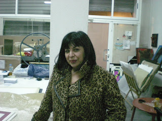
 Enriqueta Hueso "Nina Hagen"
Enriqueta Hueso "Nina Hagen"Valencia Tinta china y collages s/papel
100 x 74 cm

ENRIQUETA HUESO
ENTRA A FORMAR PARTE DE
LA PLANTILLA DE ARTISTAS DE
SALOMON ARTS GALLERY
DE NEW YORK
salomonarts.com/enriqueta-hueso.html

PILAR PALOMARES
ENTRA A FORMAR PARTE DE
LA PLANTILLA DE ARTISTAS DE
SALOMON ARTS GALLERY
DE NEW YORK
salomonarts.com/pilar-palomares.html
Entrevista con el pintor surrealista
Daniel Ramos Ruíz

La revista cultural de Miami "Sub-urbano" ha publicado una entrevista con el pintor
Por María Espinoza 26/11/2012
Biografía
Nací en La Habana, en el seno de una familia de artistas, mi padre Dagoberto Ramos, escultor que realizara el Valle de la Prehistoria en Baconao, fue mi primer y gran maestro y el que mayor influencia ha ejercido en mi obra.
Estudié Bellas Artes en el Instituto Superior de La Habana. Al terminar mis estudios trabajé como diseñador publicitario. Desde 1989 fui miembro del Movimiento de Creadores Independientes y desde 1992, miembro de la Asociación Cubana de Artesanos Artistas. En 1996 hice una maestría en “Pintura Mural” en la Universidad de la Habana y en 1997, una maestría en “Artes Plásticas del Caribe” bajo la dirección de la doctora Yolanda Wood.
Mi actividad cultural en la Habana era intensa, exponiendo tanto dentro como fuera de la Isla (Venezuela, México, Italia, España). Fue en 1997 en uno de esos viajes que estuve exponiendo en Santander donde conocí a la que hoy es mi esposa, nos presentó un amigo común. En el 2000 nos casamos en La Habana y vine a vivir con ella a Santander. Estuve exponiendo en varios sitios, tanto exposiciones individuales como colectivas, entre ellas, en el 2001, en la prestigiosa Feria Internacional de Arte que se realiza en Santander y en la que tuve el placer de coincidir con el artista cubano Roberto Fabelo.
En el 2010 vine a vivir con mi mujer a Valencia donde actualmente resido y trabajo.
A petición de mi amigo y talentoso músico cubano Javier Zalba realizo la ilustración de la portada del libro homenaje “Suite exposiciones” que le dedicara Zalba al maestro cubano Paquito de Rivera.
Ya en Valencia en 2010 expuse en la galería Arte Altea, en 2011 en la galería O+O que dirige la artista y amiga Enriqueta Hueso con la que actualmente trabajo y en 2012 en el Museo de la Luz en la Bienal Internacional de Arte de Madeira en Portugal.
En esta entrevista el artista habla de su arte, el surrealismo, su técnica y proyectos futuros.
¿Recuerda su primera fascinación, la primera vez que le urgió plasmar, volcarse sobre un lienzo?
Sería difícil definir cuándo empezó mi interés por el Arte, ya que desde pequeño mi casa fue lugar de reunión de diseñadores, poetas, fotógrafos, pintores y coreógrafos, pues mi padre siendo escultor y mi madre coreógrafa no tuve otra opción que asimilar y estar en contacto directo con la cultura nacional cubana. Supongo que como muchos pintores, los primeros trabajos fueron sobre papel, no lo recuerdo exactamente, pero sí recuerdo ver trabajar a mi padre y sentarme a su lado durante mucho tiempo observando como trabajaba. Recuerdo con nostalgia que hablábamos mucho mientras pintaba y sin saberlo se convirtió en mi primer maestro y, como es lógico, influyendo en mi carácter pictórico fundamentalmente.

¿De qué maestros del surrealismo cree haber recibido influencia? ¿Tiene en la actualidad algún punto de referencia importante?
En mi caso la influencia viene de muchas direcciones, tendría que hablar de mi propia casa, donde comenzó todo… Tendría que hablar de Roberto Fabelo, Eduardo Abela, y en la literatura Rinaldo Arenas y Paul Eluard. Pero para mí, el que más fascinación me produce es el Bosco, lo considero el primer surrealista de la historia del arte.
Ya cuando empiezo a exponer en Europa puedo ver la obra de Yves Tanguy, Dalí, Chirico, y para mí el más interesante y singular, Magritte.
¿Cómo logra desarrollar, desde la técnica, una pintura?
Algunas de mis obras son el resultado de bocetos, pero la mayoría parten del lienzo en blanco y simplemente me dejo llevar. No sigo normas ni soy perseguidor de tendencias aunque ambas son válidas para un resultado positivo, si mantienes una observación objetiva. Hace tiempo que me preocupa menos el resultado técnico y dejo que la obra me diga hasta dónde llegar.
El arte surrealista, para usted, ¿tiene un fin en sí? En todo caso, ¿qué ha aportado el surrealismo al arte?
El surrealismo como todos los demás estilos supuso un cambio de mentalidad en los artistas repercutiendo en la sociedad de manera directa, así como en el teatro, la danza contemporánea o el cine, pero está claro que ninguna manifestación del arte surge por casualidad, simplemente es un reflejo de la realidad dando como resultado ese cambio vital, ese cambio afecta a todos y a su vez se retroalimenta de ella.
No fue diferente para los estilos anteriores y no creo que cambie, hemos llegado hasta aquí a fuerza de constancia y mucha pero mucha curiosidad.
¿De qué manera logra algo tan difícil como plasmar lo onírico de la pintura?
Evidentemente el subconsciente hace su dominante papel, muchas veces partimos de un pensamiento que se convierte en boceto pero de ahí al resultado final hay casi siempre una transformación necesaria que no es impuesta ni obligada, simplemente sale y se desarrolla como cualquier otra idea. En mi caso tomo de la realidad lo que me interesa y entonces surge la transformación sin darme cuenta.
¿Cómo lleva la libertad el artista surrealista? Alguna vez, ¿ha mantenido una relación conflictiva con la pintura?
No soy consciente de ningún conflicto con la pintura, no soy consciente de ello, como tampoco puedo definir como me convertí en surrealista, simplemente trabajo siguiendo mis instintos sin pensar en ello y generalmente de una obra surge la siguiente, no creo tampoco en inspiraciones…. eso es un invento literario, el conflicto lo tengo con el trabajo diario, cuando ya estoy deseando terminar un cuadro para empezar el próximo. Hace años trabajaba mayoritariamente al óleo y lo abandoné por el acrílico buscando un resultado más inmediato

¿Cuáles fueron las dificultades más grandes que se encontró en el camino para ser artista?
Hay que pensar que la política marcó y sigue marcando a toda una generación de cubanos, y los artistas no estuvimos exentos de ello, en mi caso busqué mi identidad en la pintura pero me di cuenta que no era necesario.
Cuando empecé a viajar al extranjero entendí que no tenía que buscar nada, porque Cuba se iba conmigo de alguna manera, simplemente soy lo que soy y nada más, eso ya no es una preocupación para mí. Después pasan los años y la experiencia te favorece técnicamente, pero eso también supone nuevos retos personales porque no estás conforme y quieres continuar.
¿Y cómo es el surrealismo cubano? ¿Hay algo que lo define?
No es difícil definir el surrealismo cubano para quienes conozcan la realidad de la isla, siempre digo que son sinónimas. Pero hay un patrón que se repite en la pintura cubana que es el colorismo y la fuerza, muchos entendemos este resultado como una manera de liberación, pues reflejamos nuestras ideas porque eso es algo que nadie puede quitarnos. Los artistas cubanos somos el resultado de las condiciones sociales que nos ha tocado vivir, recuerdo que en Cuba llegué a pintar con betún porque no tenía materiales para trabajar, somos el resultado de lo vivido aunque muchos reniegan de esa época vivida y que nos ha hecho lo que somos hoy en día. Cuba es ahora mismo el surrealismo en sí mismo, solo que con un toque de café, tabaco y sol… con pinceladas de rebeldía.
¿Cuáles son sus proyectos futuros?
No me gusta mucho hablar de mis proyectos, recientemente participé en la Bienal de Arte de Madeira y hay alguna expo pendiente por Roma, pero de momento continuaré trabajando con la galería O+O de Valencia bajo la representación de Enriqueta Hueso, artista incansable y buena amiga.
Más bien tengo muchos sueños y deseos de continuar pintando sin pensar mucho que pasará después.


Biografía
Nací en La Habana, en el seno de una familia de artistas, mi padre Dagoberto Ramos, escultor que realizara el Valle de la Prehistoria en Baconao, fue mi primer y gran maestro y el que mayor influencia ha ejercido en mi obra.
Estudié Bellas Artes en el Instituto Superior de La Habana. Al terminar mis estudios trabajé como diseñador publicitario. Desde 1989 fui miembro del Movimiento de Creadores Independientes y desde 1992, miembro de la Asociación Cubana de Artesanos Artistas. En 1996 hice una maestría en “Pintura Mural” en la Universidad de la Habana y en 1997, una maestría en “Artes Plásticas del Caribe” bajo la dirección de la doctora Yolanda Wood.
Mi actividad cultural en la Habana era intensa, exponiendo tanto dentro como fuera de la Isla (Venezuela, México, Italia, España). Fue en 1997 en uno de esos viajes que estuve exponiendo en Santander donde conocí a la que hoy es mi esposa, nos presentó un amigo común. En el 2000 nos casamos en La Habana y vine a vivir con ella a Santander. Estuve exponiendo en varios sitios, tanto exposiciones individuales como colectivas, entre ellas, en el 2001, en la prestigiosa Feria Internacional de Arte que se realiza en Santander y en la que tuve el placer de coincidir con el artista cubano Roberto Fabelo.
En el 2010 vine a vivir con mi mujer a Valencia donde actualmente resido y trabajo.
A petición de mi amigo y talentoso músico cubano Javier Zalba realizo la ilustración de la portada del libro homenaje “Suite exposiciones” que le dedicara Zalba al maestro cubano Paquito de Rivera.
Ya en Valencia en 2010 expuse en la galería Arte Altea, en 2011 en la galería O+O que dirige la artista y amiga Enriqueta Hueso con la que actualmente trabajo y en 2012 en el Museo de la Luz en la Bienal Internacional de Arte de Madeira en Portugal.
En esta entrevista el artista habla de su arte, el surrealismo, su técnica y proyectos futuros.
¿Recuerda su primera fascinación, la primera vez que le urgió plasmar, volcarse sobre un lienzo?
Sería difícil definir cuándo empezó mi interés por el Arte, ya que desde pequeño mi casa fue lugar de reunión de diseñadores, poetas, fotógrafos, pintores y coreógrafos, pues mi padre siendo escultor y mi madre coreógrafa no tuve otra opción que asimilar y estar en contacto directo con la cultura nacional cubana. Supongo que como muchos pintores, los primeros trabajos fueron sobre papel, no lo recuerdo exactamente, pero sí recuerdo ver trabajar a mi padre y sentarme a su lado durante mucho tiempo observando como trabajaba. Recuerdo con nostalgia que hablábamos mucho mientras pintaba y sin saberlo se convirtió en mi primer maestro y, como es lógico, influyendo en mi carácter pictórico fundamentalmente.

¿De qué maestros del surrealismo cree haber recibido influencia? ¿Tiene en la actualidad algún punto de referencia importante?
En mi caso la influencia viene de muchas direcciones, tendría que hablar de mi propia casa, donde comenzó todo… Tendría que hablar de Roberto Fabelo, Eduardo Abela, y en la literatura Rinaldo Arenas y Paul Eluard. Pero para mí, el que más fascinación me produce es el Bosco, lo considero el primer surrealista de la historia del arte.
Ya cuando empiezo a exponer en Europa puedo ver la obra de Yves Tanguy, Dalí, Chirico, y para mí el más interesante y singular, Magritte.
¿Cómo logra desarrollar, desde la técnica, una pintura?
Algunas de mis obras son el resultado de bocetos, pero la mayoría parten del lienzo en blanco y simplemente me dejo llevar. No sigo normas ni soy perseguidor de tendencias aunque ambas son válidas para un resultado positivo, si mantienes una observación objetiva. Hace tiempo que me preocupa menos el resultado técnico y dejo que la obra me diga hasta dónde llegar.
El arte surrealista, para usted, ¿tiene un fin en sí? En todo caso, ¿qué ha aportado el surrealismo al arte?
El surrealismo como todos los demás estilos supuso un cambio de mentalidad en los artistas repercutiendo en la sociedad de manera directa, así como en el teatro, la danza contemporánea o el cine, pero está claro que ninguna manifestación del arte surge por casualidad, simplemente es un reflejo de la realidad dando como resultado ese cambio vital, ese cambio afecta a todos y a su vez se retroalimenta de ella.
No fue diferente para los estilos anteriores y no creo que cambie, hemos llegado hasta aquí a fuerza de constancia y mucha pero mucha curiosidad.
¿De qué manera logra algo tan difícil como plasmar lo onírico de la pintura?
Evidentemente el subconsciente hace su dominante papel, muchas veces partimos de un pensamiento que se convierte en boceto pero de ahí al resultado final hay casi siempre una transformación necesaria que no es impuesta ni obligada, simplemente sale y se desarrolla como cualquier otra idea. En mi caso tomo de la realidad lo que me interesa y entonces surge la transformación sin darme cuenta.
¿Cómo lleva la libertad el artista surrealista? Alguna vez, ¿ha mantenido una relación conflictiva con la pintura?
No soy consciente de ningún conflicto con la pintura, no soy consciente de ello, como tampoco puedo definir como me convertí en surrealista, simplemente trabajo siguiendo mis instintos sin pensar en ello y generalmente de una obra surge la siguiente, no creo tampoco en inspiraciones…. eso es un invento literario, el conflicto lo tengo con el trabajo diario, cuando ya estoy deseando terminar un cuadro para empezar el próximo. Hace años trabajaba mayoritariamente al óleo y lo abandoné por el acrílico buscando un resultado más inmediato

¿Cuáles fueron las dificultades más grandes que se encontró en el camino para ser artista?
Hay que pensar que la política marcó y sigue marcando a toda una generación de cubanos, y los artistas no estuvimos exentos de ello, en mi caso busqué mi identidad en la pintura pero me di cuenta que no era necesario.
Cuando empecé a viajar al extranjero entendí que no tenía que buscar nada, porque Cuba se iba conmigo de alguna manera, simplemente soy lo que soy y nada más, eso ya no es una preocupación para mí. Después pasan los años y la experiencia te favorece técnicamente, pero eso también supone nuevos retos personales porque no estás conforme y quieres continuar.
¿Y cómo es el surrealismo cubano? ¿Hay algo que lo define?
No es difícil definir el surrealismo cubano para quienes conozcan la realidad de la isla, siempre digo que son sinónimas. Pero hay un patrón que se repite en la pintura cubana que es el colorismo y la fuerza, muchos entendemos este resultado como una manera de liberación, pues reflejamos nuestras ideas porque eso es algo que nadie puede quitarnos. Los artistas cubanos somos el resultado de las condiciones sociales que nos ha tocado vivir, recuerdo que en Cuba llegué a pintar con betún porque no tenía materiales para trabajar, somos el resultado de lo vivido aunque muchos reniegan de esa época vivida y que nos ha hecho lo que somos hoy en día. Cuba es ahora mismo el surrealismo en sí mismo, solo que con un toque de café, tabaco y sol… con pinceladas de rebeldía.
¿Cuáles son sus proyectos futuros?
No me gusta mucho hablar de mis proyectos, recientemente participé en la Bienal de Arte de Madeira y hay alguna expo pendiente por Roma, pero de momento continuaré trabajando con la galería O+O de Valencia bajo la representación de Enriqueta Hueso, artista incansable y buena amiga.
Más bien tengo muchos sueños y deseos de continuar pintando sin pensar mucho que pasará después.

{kind=link}
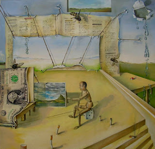


{kind=link}
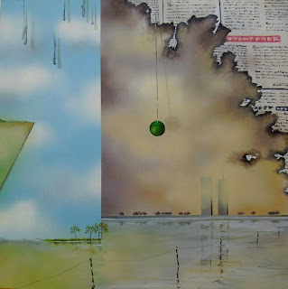

{kind=link}
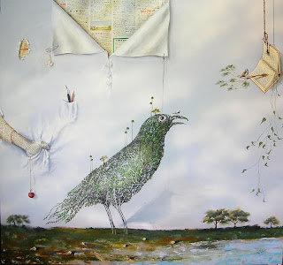
{kind=link}
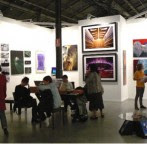
La XXª edición de Estampa
Se clausuró en un ambiente de general satisfacción por convertir una feria de grabado y estampación en algo más acorde con el siglo XXI: Un evento sobre arte múltiple en sus variadas facetas que incluyen grabado, estampación, fotografía, arte digital, instalaciones, escultura, videoarte, música, libros, cómic, diseño, etc. Todo ello amparado por la nueva ubicación en 6 naves de MATADERO MADRID.
La Asociación Madrileña de Críticos de Arte ha otorgado el premio AMCA ESTAMPA 2012 a la mejor Galería de la feria a la GALERÍA O+O, de Valencia, España, cuya directora es Enriqueta Hueso.
Publicado el 12. nov, 2012 en mundoferial.com
LA IGNOMINIA HA PINCHADO EN HUESO
Articulo de Diego Vadillo López, Revista Madrid en Marco
Asistía a la muestra de Estampa 2012, celebrada en Madrid,...

VER ARTÍCULO COMPLETO
Articulo de Diego Vadillo López, Revista Madrid en Marco
Enriqueta Hueso y Pilar Palomares prepararon
un baño de burbujas al estado de las cosas
Asistía a la muestra de Estampa 2012, celebrada en Madrid,...
....avanzaba
pausadamente cuando, de repente, una sutil obra con tintes sociales y
reivindicativos llamó mi atención sobremanera: una en uno de cuyos
elementos de composición aparecía el célebre sindicalista Juan Manuel
Sánchez Gordillo con una corona de espinas y tras un carrito de la
compra, similar a aquel que se agenció el muy truhán para materializar
el golpe de efecto en una superficie comercial. Sin duda todos los
elementos compositivos de tal obra llamaban de la manera más ostensible
la atención de la mayoría del público, quizá por ser una pieza que no ha
querido dar la espalda al terrible viento que nos mece, sin por ello
renunciar a la finalidad estética, que, por cierto, queda muy bien
armonizada con el trasfondo.
{kind=link}
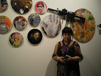

Con
el montaje de “Spanish revolution-La guerra silenciosa” queda patente
que el arte siempre ha estado cercano a lo social, junto con su función
principal de lanzamiento de artistas. De hecho, el ejemplo de ello es
que en Estampa el “stand” de ORIENTE Y OCCIDENTE (O+O) ha tenido una
gran asistencia habiendo sido además reconocido por la propia dirección
de la feria, junto con el aplauso del público y de la crítica. Y es que
observando la obra de artistas como Inés Ranseyer, Pilar Palomares o
Sergio Belinchón, no cabe la menor duda de que la galería de Enriqueta
Hueso sigue en la línea de calidad a que tiene acostumbrado al sector,
demostrando año tras año su buen hacer y profesionalidad, manteniendo,
además, como ha quedado demostrado en la recién concluida edición,
criterios que son muy favorables a la colaboración social.
Logró,
en definitiva, la galería O+O este año en Estampa, a través del
inspirado e inspirador panel, una forma de testimoniar de la manera más
sublime la palmaria realidad que nos asola. Y, además, como no podía ser
de otra forma, dicha galería, que, como se ve, tiene un par de Oes, a
cargo de Enriqueta Hueso (coautora con Pilar Palomares de “Spanish
revolution-La guerra silenciosa”), ha recibido el premio de la
Asociación Madrileña de Críticos de Arte (AMCA) a la mejor galería de la
Feria Estampa Arte Múltiple 2012, ante lo que ya solo nos queda dar la
enhorabuena a las dos artífices del proyecto por ser elegantemente
plásticas sin perder, eso sí, ni un ápice de irreverencia.
Gracias por este baño de burbujas antiespeculativas.
VER ARTÍCULO COMPLETO
SEGUNDA BIENAL KOSICE
Exhibición de las obras ganadoras de la Segunda Bienal Kosice que se lleva a cabo en el Planetario de la Ciudad de Buenos Aires, en la que participa JOAQUIN FARGAS con la obra: Hydrosmos GK1 .
Mención a la Trayectoria y la Investigación- Joaquin Fargas | Hydrosmos GK1 -| Escultura cinética
MAS INFORMACIÓN
{kind=link}
Exhibición de las obras ganadoras de la Segunda Bienal Kosice que se lleva a cabo en el Planetario de la Ciudad de Buenos Aires, en la que participa JOAQUIN FARGAS con la obra: Hydrosmos GK1 .
Mención a la Trayectoria y la Investigación- Joaquin Fargas | Hydrosmos GK1 -| Escultura cinética
{kind=link}
MAS INFORMACIÓN

Valencia del 21/09/2012 al 13/10/2012
La Galería O+O de Valencia comienza la temporada con la exposición individual de PS3*Pedro Sanchez III. Artista multidisciplinar nacido en Madrid y afincado en Nueva York, desde hace muchos años, vivió también unos años en Japón, y que ha expuesto su obra en ciudades como Tokio, Nueva York, Madrid, Berlín, Paris, Basel y Londres. Estética de los espacios excluidos, el reverso de la utopía, donde su función representativa está desnuda de su propios "atributos", en cierta medida, ante la imposibilidad de representación como valor comercial y, al mismo tiempo, buscando un espacio, una experiencia donde no quedar contenido en los márgenes de una condición cultural, donde las ideolo............leer más....
Entrevista a Lorena García

VER ENTREVISTA
Exposición "Una mirada sobre las actitudes humanas" de Ramón Conde

{kind=link}
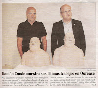
{kind=link}
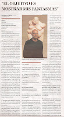
{kind=link}
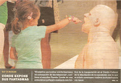
{kind=link}
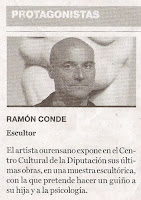
Noticia en "farodevigo.es" Noticia en "correogallego.es"
EXPOSICIÓN DOCUMENTA 2012 Del 9 de junio al 16 de septiembre Kassel, Alemania Ver imágenes de la "Documenta de Kassel 2012"

Las obras de los artistas Juan Carlos Julián y Enriqueta Hueso pasan de manera permanente al Museo de Arte Internacional Antonio Gualda de SÃO GONÇALO DO RIO ABAIXO ( Brasil ) y en el Museo Palacio de Los Gúrzua - Antonio Gualda de Durango (México)
El Museo de Bellas Artes San Pío V muestra “Expressions del ...
el periodic
... Antonio Alcaraz, José Manuel Almerich, Pepa Balaguer y Lluis Vicén, Raúl Belinchón, Sergio Belinchón, Joaquín Bérchez, Pepe Calvo, Enrique Carrazoni, ...
{kind=link}
Consuelo Cardenal
Premio Fotografía 2010 Infanta Cristina
Premio Fotografía 2010 Infanta Cristina

{kind=link}

{kind=link}
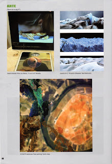
Estampa 2010